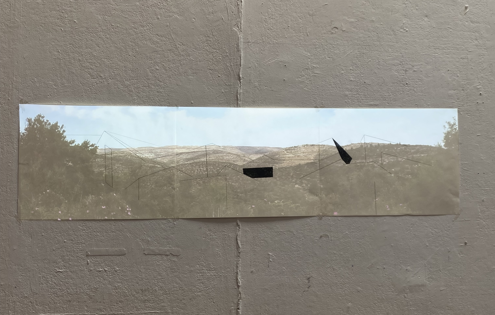

Final Review Colloquium I: Methods as Practice, Practice as Methods
This presentation outlined my initial research questions, themes, and practice for the program. Also titled “Projecting Topographies,” this early line of inquiry asked “How is the landscape reformed to correspond to colonial projections, on small and large scales?”
In addition to this web-based presentation, my work for the final included a multimedia installation including a charcoal drawing and projection which explored themes of surveillance, topography, and sight lines in the West Bank.
